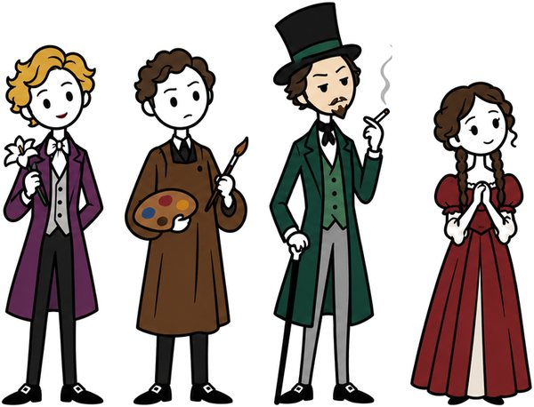
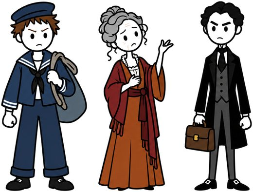

Zusammenfassung · Deutung · Klausur-Check

Ein Buch. Zehn Minuten. Ein Plakat.
Schullektüren und Weltliteratur, mit Strichmännchen erzählt. Während das Video läuft, füllt sich ein Lernplakat: Handlung, Figuren, Symbole, Deutung und drei Sätze für die Klausur. Am Ende steht das ganze Buch auf einem Blatt, und das Blatt kannst du dir hier herunterladen.
Zuletzt erschienen
Alle Bücher-
Heinrich von Kleist · um 1800 · zwischen Klassik und Romantik
Der zerbrochne Krug
Was passiert, wenn der, der die Wahrheit finden soll, selbst der Täter ist?


So funktioniert ein Video
- Die Geschichte, erzählt. Kein Vortrag, keine Bildbeschreibung: Die Figuren treten auf, und du siehst, was sie tun. Jede Angabe stammt aus dem Originaltext, nicht aus einer Verfilmung.
- Das Plakat füllt sich. Etappe für Etappe wandert die Geschichte auf ein Blatt: fünf Felder Handlung, die Figuren mit ihren Beziehungen, die Symbole, die Deutung.
- Alles auf einen Blick. Am Ende zoomt das Video heraus. Das ganze Buch steht vor dir, mit drei Sätzen, die in der Klausur tragen. Das Plakat gibt es hier zum Herunterladen.
Das Lesen ersetzen die Videos nicht. Aber sie machen es leichter: vorher zum Einstieg, nachher zum Wiederholen.
Die Kanäle
„Auf einen Blick“ ist eine Familie. Ein Kanal läuft, zwei sind geplant, und ein Verwandter kommt aus derselben Werkstatt.
-
-
-
Philosophie auf einen Blick geplant
Philosophen, ihr Leben und ihre Gedanken, nach demselben Prinzip: eine Geschichte, ein Plakat.
-
Musik auf einen Blick geplant
Komponisten, ihre Stücke und das, was sie besonders macht.